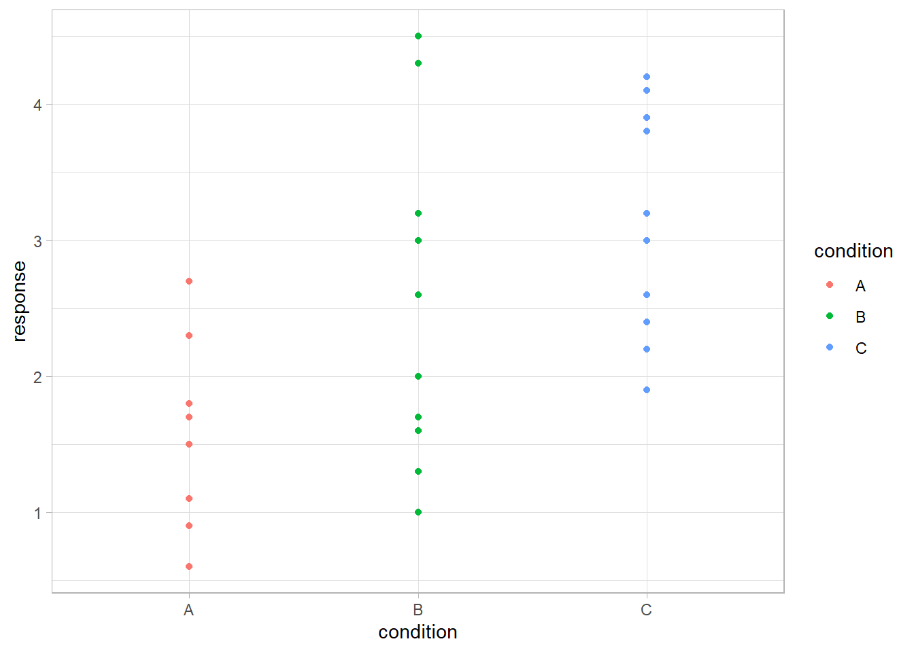
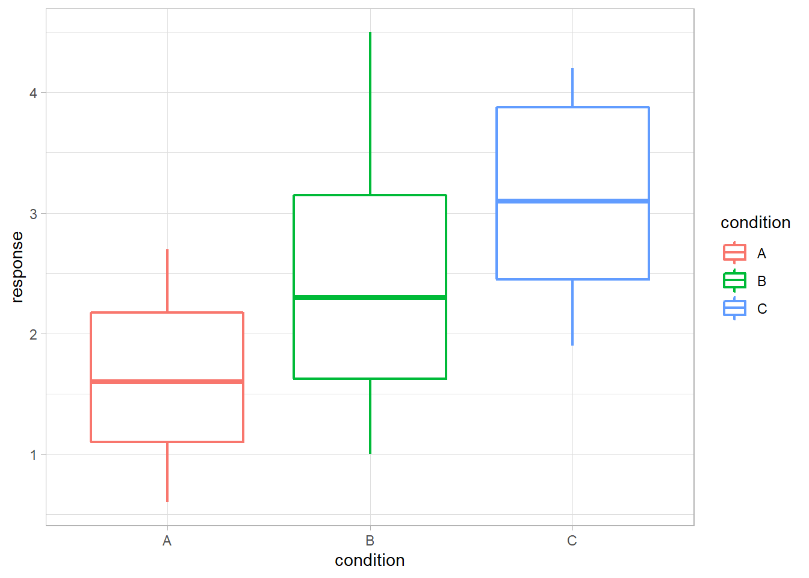
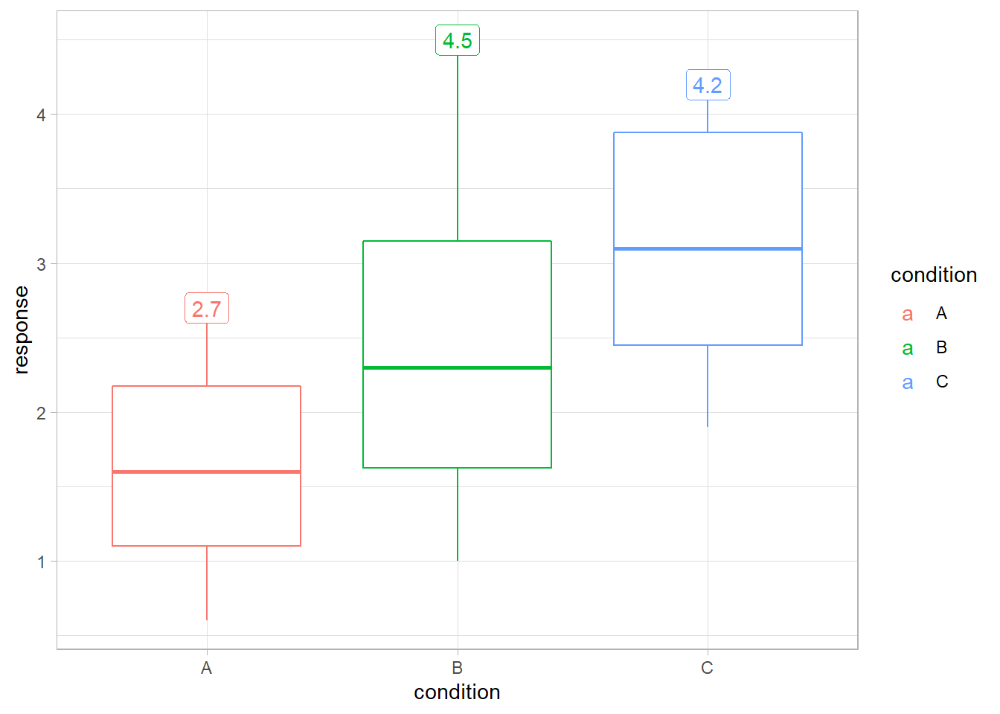
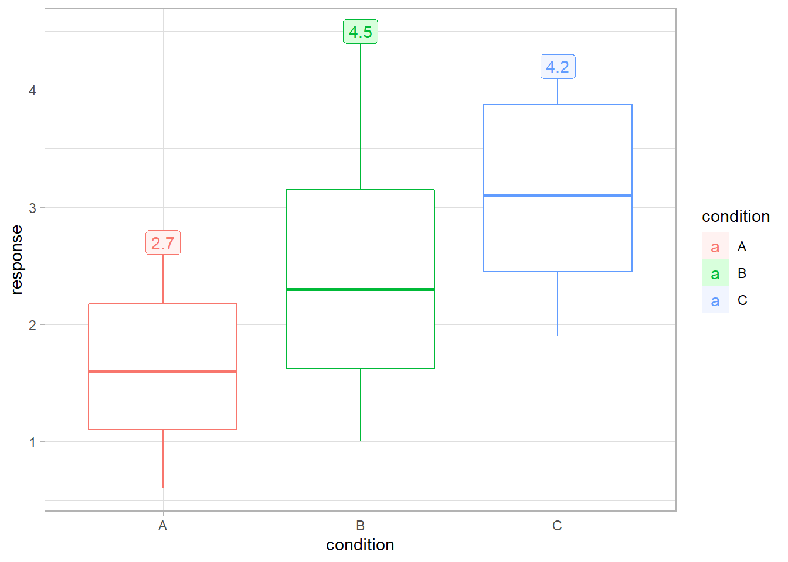

{ggbuilder} is experimental alternative approach to specifying individual ggplot2 layers. It was inspired by an observation made by June Choe in his RStudio::conf 2022 talk: some elements of a layer specification (i.e. calls to geom_XXX() or stat_XXX()) tend to be written out-of-order compared to how those elements are actually executed by ggplot2, which may make it hard to reason about. {ggbuilder} provides an alternative syntax for specifying layers that mimics familiar data transformation pipelines, and attempts to put operations in the same order syntactically as they are actually executed.
Installation
You can install the development version of ggbuilder from GitHub with:
# install.packages("devtools")
devtools::install_github("mjskay/ggbuilder")Example
Here is a simple dataset, visuallized using normal ggplot2 syntax:
library(ggplot2)
library(ggbuilder)
library(dplyr)
theme_set(theme_light())
set.seed(123456)
df = data.frame(condition = c("A", "B", "C"), response = round(rnorm(30, 1:3), 1))
df |>
ggplot(aes(x = condition, y = response, color = condition)) +
geom_point()
Or you might try use a boxplot instead (though personally I would probably use something from ggdist instead ;) )
df |>
ggplot(aes(x = condition, y = response, color = condition)) +
geom_boxplot(size = 0.75)
To translate the above to {ggbuilder}, we can start by replacing calls of the form geom_XXX(...) or stat_XXX(...) with geom_("XXX", ...) or stat_("XXX", ...). These will work just as before:

It works just as before, except that the objects created by calls to geom_() and stat_() are both traditional ggplot2 layers and ggbuilder layer specifications, which can be chained together using the pipe: |>.
geom_("boxplot", size = 0.75)
#> <ggbuilder::layer>:
#> mapping:
#> geom_boxplot: outlier.colour = NULL, outlier.fill = NULL, outlier.shape = 19, outlier.size = 1.5, outlier.stroke = 0.5, outlier.alpha = NULL, notch = FALSE, notchwidth = 0.5, varwidth = FALSE, na.rm = FALSE, orientation = NA
#> stat_boxplot: na.rm = FALSE, orientation = NA
#> position_dodge2
#>
#> from <ggbuilder::layer_spec>:
#> $params
#> $params$size
#> [1] 0.75
#>
#>
#> $mapping_stat
#> Aesthetic mapping:
#> <empty>
#>
#> $mapping_geom
#> Aesthetic mapping:
#> <empty>
#>
#> $mapping_final
#> Aesthetic mapping:
#> <empty>
#>
#> $geom
#> [1] "boxplot"This allows us to replicate an example from June Choe’s talk in which the boxplot stat is reused with a label geometry instead of its normal boxplot geometry.
In ggplot2, this requires using after_stat() to reassign the y aesthetic after stat_boxplot() does its computation:
df |>
ggplot(aes(x = condition, y = response, color = condition)) +
geom_boxplot() +
geom_label(
stat = "boxplot",
aes(y = stage(response, after_stat = ymax), label = after_stat(ymax))
)
This requires using the ggplot2::stage() and ggplot2::after_stat() functions. As June Choe pointed out in his ggtrace talk, the flow from plot data to stat transformation to geom aesthetics is written somewhat out-of-order inside the call to aes().
In ggbuilder, we can write this data flow in order by piping a stat_() into a geom_(), and specifying the aesthetics associated with each:
df |>
ggplot(aes(x = condition, y = response, color = condition)) +
geom_boxplot() +
stat_("boxplot", aes(y = response)) |>
geom_("label", aes(y = ymax, label = ymax))Under the hood, {ggbuilder} translates this into the appropriate calls to stage() in order to build the geom.
Changes to aesthetics after scaling
{ggbuilder} also allows us to do the equivalent of ggplot2::after_scale() by piping a layer specification into remap(). This will apply changes to aesthetics after scales have been applied:
df |>
ggplot(aes(x = condition, y = response, color = condition)) +
geom_boxplot() +
stat_("boxplot", aes(y = response)) |>
geom_("label", aes(y = ymax, label = ymax)) |>
remap(aes(fill = colorspace::lighten(color, 0.9)))
#> Warning: Duplicated aesthetics after name standardisation: NA
#> Duplicated aesthetics after name standardisation: NA
Changes to data
We can also modify the input data by passing a new data frame (or a function that modifies a data frame) to the plot_data() function at the top of a layer specification pipe:
df |>
ggplot(aes(x = condition, y = response, color = condition)) +
geom_boxplot() +
plot_data(\(x) filter(x, condition %in% c("B", "C"))) |>
stat_("boxplot", aes(y = response)) |>
geom_("label", aes(y = ymax, label = ymax)) |>
remap(aes(fill = colorspace::lighten(color, 0.9)))
#> Warning: Duplicated aesthetics after name standardisation: NA
#> Duplicated aesthetics after name standardisation: NA
{ggbuilder} also provides implementations of {dplyr} and {tidyr} verbs for plot_data(), so you can pipe plot_data() into those functions instead of awkwardly passing them as an argument wrapped in an anonymous function (like above):
df |>
ggplot(aes(x = condition, y = response, color = condition)) +
geom_boxplot() +
plot_data() |>
filter(condition %in% c("B", "C")) |>
stat_("boxplot", aes(y = response)) |>
geom_("label", aes(y = ymax, label = ymax)) |>
remap(aes(fill = colorspace::lighten(color, 0.9)))
#> Warning: Duplicated aesthetics after name standardisation: NA
#> Duplicated aesthetics after name standardisation: NA
In fact, we could do the transformations ourselves, which may more clearly communiate our intent:
df |>
ggplot(aes(x = condition, y = response, color = condition)) +
geom_boxplot() +
plot_data() |>
filter(condition %in% c("B", "C")) |>
group_by(condition) |>
slice_max(response) |>
geom_("label", aes(label = response)) |>
remap(aes(fill = colorspace::lighten(color, 0.9)))